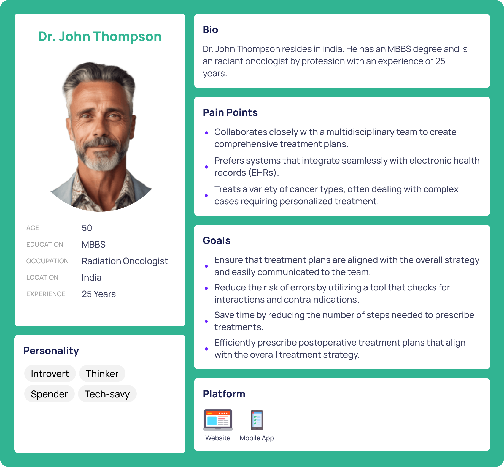
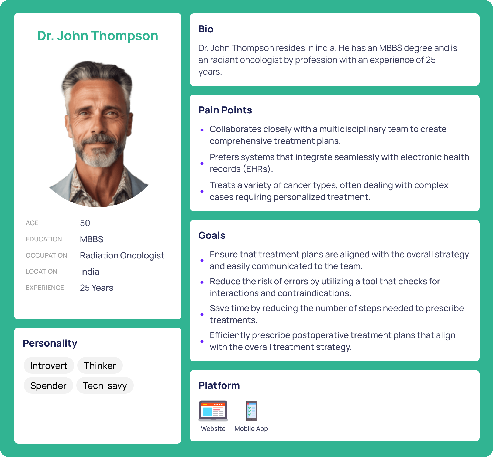

A user-friendly Oncology Treatment Management Platform that streamlines the process of prescribing, tracking, and managing cancer treatment plans.
The platform integrates clinical evidence-based decision support and provides comprehensive access to patient data in a digital format, improving collaboration between oncologists and medical support staff.
Key Features:
- Unified Patient Dashboard:
Displays comprehensive patient information, including treatment history, cancer stage, ongoing treatments, and key clinical parameters, in one place.
Easy-to-navigate interface with customizable views for different users (oncologists, nurses, admin staff).
- Evidence-Based Treatment Suggestions:
Provides oncologists with treatment recommendations based on the latest clinical research and patient-specific data (e.g., symptoms, cancer stage, treatment history).
Auto-suggests treatments based on entered data, reducing time spent searching for options.
- Automated Treatment Prescription Tool:
Oncologists can prescribe treatment directly from the platform by selecting the desired treatment modality (chemotherapy, immunotherapy, etc.) based on patient parameters.
Pre-built templates for different cancer stages reduce the time spent on customization.
- Real-Time Collaboration:
Medical staff can access the same patient dashboard and instantly see any updates made by oncologists.
Alerts and notifications are sent to relevant staff when patient data is updated or when treatments are modified.
Integrated chat and messaging systems to foster communication between departments.
- Progress Tracking:
Nurses can update patient responses to treatment and any side effects through a streamlined interface.
Visual charts of treatment progress allow oncologists to monitor how patients are responding over time, enabling quicker adjustments to treatment plans.
- Automated Data Entry & Record Keeping:
Integration with external medical systems to automatically pull in lab results, diagnostic imaging, and other relevant data.
Automates patient record updates and reduces the burden of manual data entry.

 
